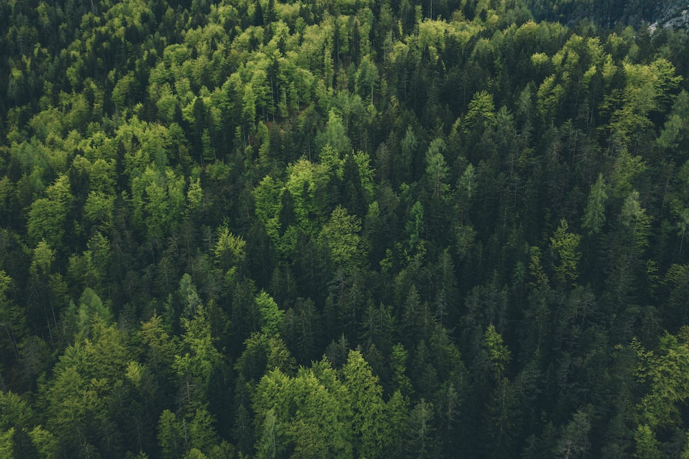

Why Forests Are Important
Many people see forests as just a tree-dominated part of land and as homes for animals. Well, there is a lot more to that than what you just see on the surface. We, as humans, actually depend on forests too. They provide us with crucial essentials we need in our lives, including medicine, fresh water, and even the air that we breathe. But, as the years have passed on, threats to the forests have grown exponentially. The biggest threat of all is deforestation. This is mainly for the expanding agriculture, and illegal logging, which comes from the demand for cheap paper and wood.
To be honest, it's really sad that it's come to rash actions like this. Yes, we humans look to find all kinds of opportunities. And quite a lot of them are hard to come by. However, the actions that many do are driven and motivated by wealth, which honestly drives just about anyone. So, do we really need to destroy a crucial part of nature that helps us? No, there are ways to help keep the forests flourishing in nature.

Ways to Help Conserve the Forests
- Plant a tree. With every new tree that's planted, it has the potential to capture tons of carbon dioxide in the air, and it's a step further to restoring forests.
- Don't move firewood. If firewood is moved across long distances, it can potentially release invasive species that can heavily damage forests.
- Be more aware of setting fires in forests. If a fire is set dangerously close to a forest, it has the possibility to consume the entire forest if it grows out of control.
- Properly dispose of garbage. Carelessly discarded garbage can wind up in the rivers forests house, and can pollute the water if more ends up in it.